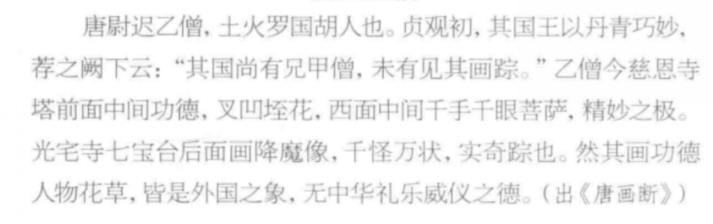

复习¶
助教整理的问题¶
-
1、请说明何谓“丝绸之路”¶
- “丝绸之路”这一称谓由德国的地理学家李希霍芬( Ferdinandvon Richthofen,1833-1905)于1877 年提出。是指中国古代以丝和丝织品为主要商品，经中亚通往西亚、南亚以及欧洲、北非的陆上贸易通道，简称 ‘丝路’。
- 狭义的 “丝绸之路”是指起始于古代中国长安或洛阳,通过甘肃河西走廊和今天的新疆地区,越过帕米尔高原,进入中亚、伊朗等地,连接亚洲、欧洲的交通和商业贸易路线。 分为三段：东段自长安至玉门关或阳关，中段是从玉门关或阳关到达葱岭 （今帕米尔），西段指葱岭以西。广义的 “丝绸之路”已经成为古代东、西方之间经济、文化交流的代名词
-
2、请简述张骞出使西域的历史意义¶
- 公元前139年，张骞带领一百多随从从长安出发西行，先后到达大宛、大月氏、大夏，最后于前126年历尽周折返回长安。前119年，张骞第二次出使西域，他和副使先后到达乌孙、大宛、康居、大月氏、大夏、安息和身毒等国。张骞的西域之行长达13年之久，史学家司马迁称之为“凿空之行
- 张骞出使西域，极大地推动了丝绸之路的蓬勃发展，迅速推动了中外经济与文化交流，进而引来西北地区剧烈的社会变革。葡萄、核桃、胡萝卜、胡椒、胡豆菠菜、黄瓜和石榴等的输入，丰富了日常饮食。
- 张骞的所见所闻直接改变了汉王朝的边疆战略，从解除边患向拓展域外、发扬国威、经营丝绸之路转变
-
3、请简述波斯、萨珊帝国的兴起及其对周边国家(区域)有何艺术辐射¶
-
波斯帝国，又称阿契美尼德王朝，兴起于公元前550年左右。这一时期，波斯人被米底王国统治。在居鲁士二世的领导下，波斯人于公元前550年成功灭掉米底王国，建立了波斯帝国。
-
居鲁士二世和儿子冈比西斯二世先后攻灭了吕底亚王国、新巴比伦王国和埃及王国，扩大了波斯帝国的疆域。大流士一世统治时期，波斯帝国达到鼎盛。但随后因波希战争的失败，消耗了波斯帝国的国力，导致帝国开始衰落。公元前330年，波斯帝国末代国王大流士三世被杀， 波斯帝国灭亡。
- 萨珊帝国也称波斯第二帝国，是最后一个前伊斯兰时期的波斯帝国。它取代了被视为西亚及欧洲两大势力之一的安息帝国。在安息帝国衰败及其末代君王阿尔达班五世阵亡后，阿尔达希尔一世建立了萨珊王朝。萨珊王朝一直统治到阿拉伯帝国入侵，伊嗣俟三世被迫逃亡为止。萨珊王朝的领土包括当今伊朗、阿富汗、伊拉克、叙利亚等地，控制范围甚至延伸到印度。
- 艺术辐射：萨珊王朝统治时期见证了古波斯文化发展至巅峰状态，并在很大程度上影响了罗马文化。其文化影响力远远超出了它的边界，遍及西欧、非洲、中国及印度。
-
-
4、简述粟特民族与粟特艺术及其影响¶
-
粟特是中国古书中记载的西域古国之一，亦为民族名称、活动范围在今中亚阿姆河与锡尔河之间的泽拉夫尚河流域。在两河流域，分布着大大小小若干绿洲，其中撒马尔罕和布哈拉最大，粟特人建立了康、安等一系列小国。一说他们的先民原居祁连山下昭武城(今甘肃张掖)，后为匈奴人所破，被迫西迁至中亚，故称“昭武九姓”。
-
粟特绘画艺术向中原的传播,在南北朝甚至以前就已开始。晋代康昕、北齐曹仲达、唐代康萨陀以及敦煌莫高窟第390窟(隋代)第244(隋唐之际)的绘者，构成粟特画派。
粟特画家曹仲达的笔墨“曹衣出水”影响到了汉地的绘画
曹衣出水：又称曹家样，衣服褶纹的表现方式。笔法刚劲稠叠，所画人物衣衫紧贴身上，犹如刚从水中出来一般
- 在唐代,中国绘画开始出现通过色彩的晕染,来体现凹凸深浅的立体效果。粟特画家在这一技法的传入过程中,也起到了重要的中介作用。 粟特人的大量入华,粟特音乐艺术也开始东传,在唐代,有一大批来自粟特的乐人,他们或以歌名,或以乐名；粟特乐曲传入中原。胡旋舞、胡腾舞等西域舞蹈传入，在敦煌壁画中也常多见
-
-
5、简述犍陀罗和秣菟罗艺术样式、分布区域及其在佛教艺术传播中发挥的作用¶
-
犍陀罗地区地处沟通东亚、中亚与印度次大陆的交通要道，希腊人、塞种人、贵霜人、波斯人曾先后统治此地，希腊—罗马、波斯、印度等多元文化深刻影响此地佛教；
-
犍陀罗(西北部)： 造像静谧内敛，展现印度希腊化的睿智与写实风格，鼻梁高而长，头发呈波浪形并有顶髻，身披希腊式长袍（衣纹厚重），左肩披下复腋衣，右肩袒露，佛及菩萨像有时且带胡须，背后有火光纹样，圆顶佛塔，希腊石柱；
-
秣菟罗(南方，恒河中上游)： 造像稳健有力，呈现出印度本土化的活力与古典样貌。薄衣贴体、宽肩厚胸、螺发丰颊。
-
与犍陀罗艺术几乎同期，秣菟罗作为贵霜王朝的东都，自古在外族入侵、贸易往来中成为东西方文化交汇地。该地区的造像受到印度的雕刻传统，参照印度本土特别是秣菟罗本地传统的药叉创造，也受农耕文化的影响。
-
药叉
药叉，即夜叉，一种鬼，译为捷快，形容行动敏捷又迅速。 佛教里的一种鬼道众生
印度佛教的造像风格，与中国佛像的形成紧密相关，造像艺术的发展加速了佛教的传播。西北印的犍陀罗艺术，为由西域沿丝路向东传播的北传系统；中印度的秣菟罗艺术，则是由南方海路向东传播的南传系统。
主要的体现（例子）：佛传、佛本生故事；大耳垂、螺纹发髻、流线型服饰“吴带当风，曹衣出水”；云冈石窟，巨型造像。
-
6、 请以阿富汗佛寺遗址出土文物为例，分析贵霜大夏时期的艺术与犍陀罗艺术的异同¶
-
阿富汗艾娜克(MesAynak)遗址
- 艾娜克，在普什图语中是“小铜矿”的意思。佛教遗址位于阿富汗首都喀布尔东南38公里处的一块荒芜的土地上。在这里，发现了400多座佛塔、佛像以及百余英亩的佛教寺院群。
- 艾娜克出土的最早的钱币属于迦腻色迦(约127-150年在位)。可能正是在这位贵霜君主统治时期，艾娜克繁荣起来，成为矿业中心和佛教中心。
- 艾娜克的地理位置不同寻常，跟大犍陀罗地区的重要文明点都相距不远，佛教雕塑风格相似。贵霜大夏时期的艺术和犍陀罗艺术都受到佛教文化的影响，体现在对佛教教义、人物和故事的描绘上。其都体现了不同文化之间的交流与融合。贵霜大夏时期，来自不同地区的艺术家和文化在此交汇，形成了独特的艺术风格。同样，犍陀罗艺术也融合了印度、希腊、罗马等多种文化元素。
-
哈达佛寺遗址
-
哈达佛寺遗址位于今阿富汗贾拉拉巴德东南约8公里处，年代约为2-8世纪。梵文“哈达”意为骨骼，哈达佛寺可能由此得名。中国古代僧人法显、道荣、宋云、玄奘曾访问此地。玄奘在《大唐西域记》中所记的那揭罗曷国醯罗城即此。玄奘还记载这里收藏有如来的顶骨、髑髅、眼睛、袈裟、锡杖。哈达佛寺即以此闻名于世。
-
经发掘的遗迹包括7个佛寺，其中大多数是塔院，僧院很少。塔院布局与犍陀罗佛寺相似，即在略成正方形的寺院中心建造主塔，院子四周配列回廊状的小室，主塔周围和小室内部都建有许多小供养塔。
-
墙壁以泥土、石灰和砾石相混合的材料堆筑，一如波斯萨珊朝的技法（相异），并在外壁抹以石灰。
-
寺院内的塑像用黄白色石膏制成，有佛、菩萨、僧人、俗人、神怪等。塑像形象逼真，具有明显的古希腊罗马风格，属犍陀罗佛教造像的西部地区派别。
-
雕塑艺术与喀布尔附近及巴米扬佛教遗迹、丰杜基斯坦佛寺遗址等处出土的塑像类似，通称为印度一阿富汗流派，以与犍陀罗石雕艺术流派相区别。
总结：
- 地理位置：贵霜大夏时期的艺术主要出现在中亚地区，特别是贵霜帝国境内。而犍陀罗艺术则主要分布在巴基斯坦的犍陀罗地区。
- 贵霜大夏艺术：在贵霜大夏时期，艺术作品更多地展现了王室和神灵的形象，同时也包括自然景观和动物图案。
- 犍陀罗艺术：犍陀罗艺术则以其独特的佛像造像艺术著称。这些具有浓郁希腊风格的佛像通常呈现出优美的体态和姿势，面容平静安详，服饰华丽。
- 综上所述，贵霜大夏时期的艺术与犍陀罗艺术在宗教背景、艺术风格和文化交流等方面具有相似之处，但在地理位置、艺术特点、文化融合和影响范围等方面则存在明显的差异。这些异同点共同构成了两者独特的艺术魅力和历史价值
-
-
7、请根据汉文史籍记载并结合出土佛教艺术品勾勒于阗佛教艺术概貌¶


-
于阗画派的代表人物是尉迟乙僧，他擅画佛像、鬼神、人物、花鸟，史载其绘画的突出特点是大画磊落有气势，小画用笔坚劲如屈铁盘丝。这或可概述为于阗佛教艺的特点。
-
达玛沟佛寺画的绘画技法就是平画为主，==“凹凸法”与“铁线描”==有机融合。壁画用深褐色及黑色线条勾勒轮廓，多采用平涂，同时多在衣服、装饰部分略施明暗的手法，追求大色块的对比和总体艺术效果的突出。采用留白或平涂的方法对个别人物的脸部、袈裟等以晕染突出其起伏、变化，但晕染比较柔和淡雅，表现的手法更趋于装饰性，因而显得更加柔和，富有和谐之美。
- 用线技法上首先使用铁线描勾勒，用笔道劲，用线粗细相间，使表现的内容富有韵律和动感。
- 在用线方面，小幅作品的确如屈铁盘丝，线条流畅；大幅作品在酒脱之中不乏精致，准确地表现了身体的结构和衣纹的质感。
- 从构图看，达玛沟佛寺遗址壁画采用的是单幅多个形象的构图手法，主体形象位置严格、突出，附属形象则相对自由。
大画磊落有气势，小画用笔坚劲，“屈铁盘丝”
绘画技法
平涂为主，“凹凸法”与“铁线描”有机融合，晕染柔和,日渐向汉地风格人物画靠拢
用线技法
铁线（古代新疆佛画特点）为主，但更柔韧且富于起伏转折，又和富于粗细变的线描相济为用，细微之处更加自如
构图
单幅多形象构图，主体形象位置固定、突出，附属形象自由
-
8、请论述塔克拉玛干沙漠北缘的克孜尔与南缘的于阗佛教艺术之间的差异¶
-
地理位置与影响
-
龟兹：位于新疆库车拜城一袋，艺术风格收到犍陀罗艺术（1-3实际）和后犍陀罗艺术（4-7世纪）的影响。现存壁画数量多，且色彩明显
-
于阗：与龟兹一南一北，同样受到犍陀罗艺术的影响，但是收到中原的影响更加深远，其佛教艺术也在7-8世界表现出明显的中原汉文化痕迹。
-
-
艺术特色
- 龟兹壁画：艺术形象优美生动，独具一格，表现在任务，乐舞，动物等方面。人物形象有着眉目口鼻集中的圆脸，简装丰满的身材和举止优雅。壁画中的乐舞形象也占有特殊的地位。
- 于阗美术：佛像头部一般为长圆，连哦按个中央较高，无关散布，眉毛和研究支架距离较大。佛像大都身披通肩袈裟，和龟兹佛像的圆浑脸庞
-
壁画风格：
- 龟兹壁画：规模、气势和丰富程度仅次于敦煌石窟，表现手法别具异彩。色彩明显，具有较高的艺术水平。
- 于阗美术：在佛教壁画和版绘方面，7、8世纪以后的作品表现出明显的中原汉文化影响痕迹，相对于龟兹艺术，“胡貌”特征不足。
-
佛教艺术发展：
- 龟兹：其佛教艺术在保持中亚佛教艺术特色的同时，也融入了本地元素，形成了独特的艺术风格。
- 于阗：与中原王朝联系密切，其佛教艺术在发展过程中更多地吸收了中原汉文化的元素，形成了与龟兹不同的艺术风格